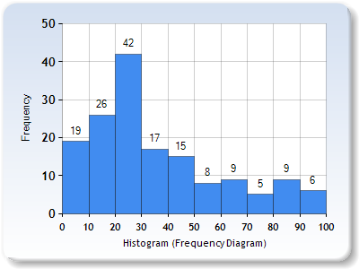
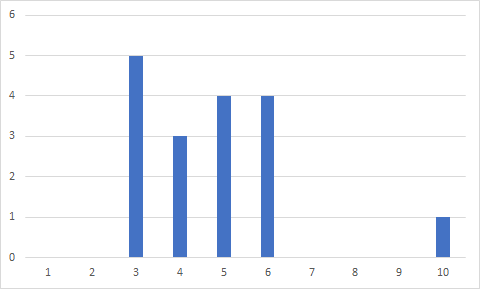

The process of visually exploring data can be summarized in a single sentence: find patterns and trends lurking in the data and then observe the deviations from those patterns.
That is what Cairo said chapter 6 that we read. And from that definition, the norms is what go along with the trends of the data, and the exceptions are outliers, a value that is far from the norm.
Norms including:
Mean: the sum dividing by the total count
Mode: the value that appears most frequent
Median: the middle value when sorted all value
Range: the difference between the biggest and smallest value
I'm taking data from this site: 2019 QS World University Rankings ® Result tables. I only take the data of universities and colleges in the U.S and make it into things that we can look into easier.
Out of 156 universities and colleges, this histogram shows the distributions of score:

A histogram of 156 universities and colleges in U.S
I used an online generator for the graph because my Excel version don't have histogram in the graph options. The x-axis is the score distribution and the y-axis is number of schools in that score range.
The mode of this data set is 7.2-14.2, the median is 27.5, the mean is 36.25, and the range is 92.8. Because every school have the same weight, so we don't need to calculated the weighted mean.
Here's a scatter plot of the data set:
A scatter plot of the same data set
50 states are numbered in alphabetical order in this page US States
Each dot represents one university/college, the x-axis is the state number and y-axis is the score.
Base on this graph, we can see that there are some states with a lot of good schools like number 5, or some states with one good school and the rest are normal to not very good like number 30. But this data set doesn't show every school so we can't conclude anything from it yet.
The graph above doesn't quite show what's the exceptions are. So here's another one (I make this one up):

Scores of a test in a Computer Science class
Here the exception is one person scoring 10 on the test. Everyone else is in the range from 3 to 6, but the exception is a 10. So an exception is an outlier in the data set.